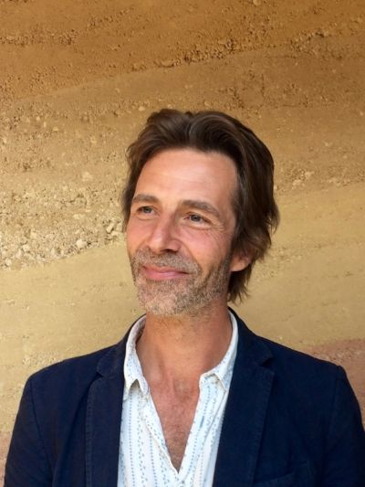

How did you start meditating?
For me this was a question of becoming interested in spiritual ideas and spiritual practices at quite an early age. When I was about eighteen, I was interested in two domains of life. First, I was interested in the approach of existentialism, and I avidly read Jean-Paul Sartre’s Being and Nothingness. Sartre was speaking about the human condition; what it means to be a human being today, and the appearances and beingness that we encounter. Secondly, I was also interested in what can termed mystical and spiritual beliefs. At that time the easiest literature to come across was that of the Tibetan Buddhist tradition. I was intrigued by their mystical approach, the practices that they were engaged with, and the ideas they held about the world and life.
I can see that these two domains, represented by existentialism and Tibetan Buddhist tradition, appear to be diametrically opposed. In the latter I was reading about obscure shamanistic practices; journeys into others worlds; what happens to the soul after death, and other such esoteric things. With the former I was interested in the human condition. What does the modern human being of today actually experience? For example, there is loneliness, isolation, and the pure fact of beingness. I felt like I walked in both these two domains, and, between them, I had the question of how to engage with the spiritual world today? I also held the question of what does the human being encounter in the heart of the everyday reality. Was this not too a spiritual experience?
Laster on I began to read quite broadly and widely in spiritual and esoteric literature, and in my mid-twenties, I came across the work of Rudolf Steiner. I remember hearing his name for the first time in a conversation with some friends one day, and I had the thought that I must find out who this man was and what he was all about. A little while later after studying his book Theosophy, I bought of a copy of Guidance in Esoteric Training. It had the Rose Cross meditation in it and examples of other meditations from the early Esoteric School. I recall thinking to myself that I wanted to begin practising the main morning and evening meditation exercises. So, I made a little regime for myself, waking up early, and before any other thought had passed through my mind I set myself down to meditation. And this I duly did.
However, what I discover was not what I was expecting at all, because I found out that I had little capacity to concentrate. I just sat there with my monkey mind going very fast, and with all the usual distractions that the monkey mind can bring: thoughts about the world, anxieties and worries, these sorts of things. I went back to Guidance in Esoteric Training and, having started down this path, I realised: meditation is not easy. I didn't have anyone immediately around me who I could turn to, to talk about handling the obstacles that arise in meditation, or how to actually, day-by-day, develop a meditation practice. I had Steiner's instructions, but I didn't have anyone with whom I could share or discuss my struggles with.
In Buddhism they have something the sangha. The sangha is a community of practitioners, monastic or lay, who are meditants together and committed to the Buddha’s Eightfold Path. Within this community there is the possibility of sharing practice. This reality of a community of practitioners wasn't available in anthroposophy at that time. Talking about meditation in anthroposophy was still very much taboo back then. Meditation was something that you did in private, in the seclusion of your own home. And that was that. Not surprisingly then, after a while, I became disenchanted with meditation practice. I thought: I can't do this. Basically, I couldn't reconcile my own practice with what I read in the instructions. But I still wanted to meditate. I had chosen the path of anthroposophy, but with regard to the anthroposophical path of meditation, I found that I didn't have a clear, supportive, step-by-step processes to follow. At that young age it didn't seem clear to me what I was supposed to do. Or rather, I knew of course, what I was supposed to do, but the capacity of how to do it was, I felt, beyond me.
Then, around the age of thirty, I went on a Buddhist retreat. I went for a month. During that month I got very clear instructions on meditation practice, and from several very experienced meditation teachers. For myself, I found that that the person-to-person approach was just what I needed. On the retreat we practiced standard vipassana or insight meditation; the bringing of the mind to calm, and just being with what is and whatever arises. There was one practice session in the morning, one at midday, and another at the end of the day. By the end of the retreat I realised that I could do this. I was indeed capable of meditating. Paradoxically, however, I also realised that Buddhist meditation itself wasn't for me. The philosophical truths of Buddhism, that everything is impermanent (anicca) and empty (suññatā) and that there is no-self (anattā), didn’t ring try for me from my understanding and experiences of anthroposophy. Of course, this is one of the distinctions between anthroposophical and Buddhist meditation; that whatever arises in the meditation is impermanent, empty, and also there is no-self in the meditation. And having worked with anthroposophy, this was not the path I was on.
I gained a lot from my Buddhist meditation retreat and to this day am immensely grateful for the experience. It gave me something that I had been missing within the anthroposophical community. A big part of this was simply being able to be share and ask questions that naturally arise around meditation practice, such as: How do I do this? What posture should I adopt? If I am not going to focus on my breath, what do I focus on? How should I deal with distractions? How should I deal with becoming sleepy? Being able to share such questions openly and honestly with others was of immense benefit.
Having had the benefit of these experiences I then returned to Steiner's works and picked one particular meditation to work with. Ever since I worked with one meditation pretty much the whole time. On occasions I have worked with other verses from Steiner, but I have always has the feeling of not quite exhausting this one meditation, and so I keep coming back to it.
Why do you meditate?
That’s a good question. Again, as this is personal question, what follows entails some self disclosure. Following on from the theme of the two domains we have already discussed, I would say that one answer is that meditation reconciles the existential domain with that of spiritual becoming. Through ongoing meditation practice I recognise that in my day-to-day life I am more awake, clearer, and more open. The effects of meditation bring calm into the emotional life, clarity into the thought life and also the element of creative choice in life itself. Fundamentally I think, meditation is a journey towards the real self, or, one might say, towards the realisation of self. We have the aspects of ourselves that come and go: emotions, thoughts, moods, aspects of the personality. Yet underneath these there is an abiding self. A dedicated meditation practice can bring us closer to this, so that month after month, year after year, we can come closer to the experience of being an ‘I.’ Meditation accompanies us in our becoming.
What is the most memorable experience for you in Living Connections, First public Event on Meditation at the Goetheanum: July 7–9 2017?
There were so many memorable experiences, but if I was to choose one then I would say the improvised music. I loved the ambience that was created through the improvised music, and it was something very special. Because it was improvised, it can never be repeated. I think the conference would have been different without the special mood that the music brought, so I'm very thankful for what was brought in to the conference through this. It allowed something very fine to be present in our meetings. It created a new page, upon which things could then appear. What followed out of the improvisations was wonderful interactions with people, truly human meetings, in the broadest and fullest sense of the world. The door for those meetings, however, was opened through the improvised music.
Could you outline examples of the basic anthroposophic meditation or exercises in your understanding?
In essence, this is very simple. It involves going to a place of stillness, a place of bringing the contents of the soul, of the mental and emotional life, to a stillness. I can liken it to allowing the stage of the soul to become quiet, clear and serene, and as far as possible clear. This is the stage of cultivating stable attention. The stable attention then needs to become a sustained attention, a deeper state where there are far less interruptions occurring in the consciousness. The soul has turned away from the sense world, allowed the residue of the remembrances of the physical world and mental contents to die down, and the next step is to work with a meditation object. For me, this is a verse from Steiner. For some people, it can be an image, or an image and a verse. Whatever content one has chosen can then placed on the stage of the soul. I then to live in the verse as fully, as devotedly as possible, so that the meditation object is the only content within the soul. Having done that, the soul can then let the object go, and allow an empty space to be created.
This newly created empty space is also an active space. It is a place of concentration; not of hard concentration as in an intellectual concentration, but of a deepened sustained attention. There then follows a period of being attentive to the active and receptive space that has been created to see what may appear. And if something does appear, then this is a grace. The engagement with the act of appearance on the stage of the soul is very sensitive though. It requires great openness: listening and abiding in a very quiet, attentive way, and allowing whatever wants to come to then come.
After a period of time, there is a gentle waning of the sustained attention. You can feel yourself disengaging from that state, and the meditation begins to come to a natural close. There then follows a feeling of thankfulness, a quiet sense of gratitude before the meditation session properly ends.